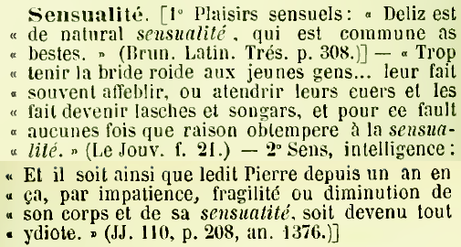

Charles du Fresne, sieur du Cange (1610–1688)
Ducange, était d’une taille un peu au-dessous de la moyenne ; il avait la tête bien proportionnée, les yeux charmants et pleins de feu,
une belle figure, les traits distingués et l’air noble. S’il ne jouissait pas d’une extrême opulence, il possédait néanmoins une fortune
honnête, et n’en désira jamais une plus grande, répétant qu’un homme de lettres devait se contenter d’une aisance qui lui permit de
satisfaire son goût pour les livres. D’une humeur égale, jamais incommode, ne fatiguant personne, se prêtant sans réserve à ceux qui
imploraient son appui, communiquant avec facilité les fruits de ses études, il était plus enclin à mériter les récompenses qu’à les
solliciter.
BALUZE, 1689, traduit du latin, dans Du Cange, Chronicon paschale
C. du Cange, biographie
- 1610, Amiens, naissance
- 1619, Amiens, collège des jésuites
- 1628, Orléans, université de droit
- 1631, Paris, inscrit au barreau
- 1638, Amiens, mariage
- 1657, Histoire de l’empire de Constantinople (empire latin, 1204–1261)
- 1665, Traité historique du chef de saint Jean-Baptiste
- 1669, Paris, peste d'amiens
- 1669, Histoire de saint Louis, écrite par le sire de Joinville (édition)
- 1675, projet d'édition des historiens et chroniqueurs de la France sous la protection de Colbert
- 1678, Glossarium ad scriptores mediae et infimae latinitatis
- 1680, Histoire byzantine
- 1688, Glossarium ad scriptores mediæ et infimæ græcitatis
Lexicographie de langues médiévales, quelques repères chronologiques
- 2003 – …, DMF, Dictionnaire du Moyen Français
- 1925 – 2002, Tobbler-Lommatzsch
- 1924 – …, lancement du Novum glossarium mediae latinitatis (NGML).
- 1902, , Dictionnaire de l'ancienne langue française...
- 1883 – 1887, édition du Glossarium..., Niort : Favre
- 1875 – 1882, édition du Glossaire de Lacurne, Niort : Favre
- 1863 – 1877, , Dictionnaire de la langue française (section historique)
- 1840 – 1850, , édition du Glossarium..., Paris : F. Didot
- 1771, , Lexicon Totius Latinitatis
- 1766, Glossarium..., , supplément et Glossaire français
- 1756 – 1882, , projet d'un Glossaire d'ancien français
- 1736, Glossarium..., ajoûts des bénédictins de Saint-Maur
- 1678, , Glossarium mediae et infimae latinitatis.
- 1286, (Johannis de Janua, Balbi) Catholicon
- ~1250, (Guillelmus Brito)
- ~1175, Pisum (Huguccio), Liber derivationum
- de Gloucester
- 1053, , Vocabularium
- 565 – 636, , Étymologies (livre X De Vocabulis)
http://ducange.enc.sorbonne.fr/
10 tomes, 6000 pages, 90 000 entrées, 6 millions de mots, 80 Mo d'XML TEI.
Page de titre
- Glossaire de moyen et bas latin ;
- créé par Charles Du Fresne seigneur du Cange ;
- augmenté par les moines de l'ordre bénédictin ;
- avec le supplément intégré de D.P. Carpentier ;
- ainsi que les ajouts de G.A.L. Henschel ;
- suivi du glossaire français, des tables, des index d'auteurs et de sujets, et de dissertations ;
- nouvelle édition augmentée de nouveaux mots et citations ;
- par Leopold Favre, membre de la Société de l'Histoire de France et correspondant de la Société des Antiquaires de France.
Histoire éditoriale
- 1883–1887, Léopold Favre, réédition légèrement augmentée de Henschel, 10 volumes.
- 1840–1850, Louis Henschel, fusion des éditions précédentes chez Didot, 8 volumes.
- 1766, Pierre Carpentier (1697–1767), 4 volumes de supplément.
- 1733–1736, bénédictins de la congrégation de Saint-Maur, édition augmentée, 6 volumes.
- 1678, Charles du Fresne, sieur du Cange (1610–1688), 3 volumes.
Les métalexicographes qui comptent
[…] des signes différents indiquent avec une telle précision ce qui appartient à chaque auteur, qu’au premier coup d’œil on distingue
sans confusion le travail primitif, les additions des Bénédictins, les suppléments de Carpentier et les compléments dus aux recherches des
nouveaux éditeurs. […] ce signe [le ** de Henschel] n’est pas répété moins de cinq cent dix-huit fois dans les cent soixante pages qui
composent la première livraison.
GÉRAUD, H. 1840. « Historique du Glossaire de la basse
latinité de Du Cange » dans Bibliothèque de l'École des chartes.
| Auteur | Nombre d’articles | Texte en millions de signes | part des citations dans le texte | Citations, nombre par langue : latin, français, grec |
|---|---|---|---|---|
| Glossarium | 90 388 | 44,7 Ms, 5004 p. | 47% | 126 440, 22 518, 13 673 |
| du Cange | 22 980 | 15,4 Ms | 48% | 48 215, 4710, 8 178 |
| mauristes | 34 875 | 16,9 Ms | 38% | 42 526, 2 241, 4 850 |
| Carpentier | 26 411 | 14,0 Ms | 49% | 31 418, 15 471, 644 |
| Henschel | 1 069 | 1,7 Ms | 17% | 2 438, 68, 1 |
| Favre | 5 053 | 0,6 Ms | 28% | 1 843, 28, 0 |
Flottement graphique et adressage
Le château de Moulinsart ?
- MOLINA, Mola, molendinum. […] (du Cange)
- MULINARIUS […] Vide Molina, Mulnerius (Bénédictins)
- MULNETUM. Vide Molina. (Bénédictins)
- MOLENDINUM […] (du Cange, Bénédictins, Carpentier)
- […]
- SARTUS. Vide Exartus et Sartum. (Bénédictins)
- SARTUM, vel Sartus […] Vide Exartus et Sartare. (Bénédictins)
- EXARTUS, Exartum, Exartes, Essartum, Assartum, Sartus, Sartum. […] (du Cange)
- ASSARTUM, ut Assarta. Vide Exartus. (du Cange)
- […]
Glossaire de mots ou de choses ?
- pas les mots connus et fréquents (sum, habere…) ;
- pas de mots grammaticaux ;
- peu d'épithètes, de verbes, d'adverbes, surtout des noms ;
- beaucoup de mots inconnus de l'antiquité (feudum, bannum, plaidura…)
- beaucoup de significations nouvelles (villa, servus, pater…)
- beaucoup de mots rares
Un index de documents médiévaux.
Part de latin classique dans la nomenclature
Sur 64 770 vedettes principales comparées au lexique Perseus.
- 4 116 lemmes classiques (dont verbes à l'infinitif)
- 1 692 variantes de lemmes classiques
- 1 502 formes classiques
- 743 variantes de formes classiques
- 56 717 lemmes, variante ou formes non classiques
Taille des articles
De 30 caractères (ex : MISSIBILIS) à 30 pages (MONETA).
Citations par articles
Du Cange, « 1. PIETAS »
pietas, tis f. DuC ; FEW viii 438 (cf. B. Bon et A. Guerreau-Jalabert dans Médiévales 42 [2002] p. 73-88) forme pidietas : Cartul. S. Iacob. Legion. 88 p. 239 (a. 1023).
Plan- I miséricorde, bonté envers l’homme :
- II vénération de l’homme pour Dieu
- III bienveillance, miséricorde, compassion (des hommes entre eux) :
- IV vraie foi, orthodoxie
I miséricorde, bonté envers l’homme A de Dieu 1 en général : Epist. var. II p. 319, 36 (a. 829) : prout de Domini confidimus e. Lupus epist. 4, 8 p. 9, 29 (a. 836) : quare Dei amplecti debetis immensam em, qui vos sua dignos iudicaverit correctione. Paul. Alb. conf. 1 p. 316, 33 : Deus qui auctor es luminis, fluvius is. Anal. hymn. 49 p. 376 : ut leti iudicem / te venientem / cum virtutum lampade mereamur videre / tua certi de e. Cartul. Clun. 140 t. 1 p. 147-148 (X s.) : ut eam s domini a cruciatibus inferorum liberare dignetur, tradimus … aliquid ex rebus proprietatis eius. Anselm. Cant. cur Deus 1, 3 p. 220 : (Deus) tanto maiorem dilectionem erga nos et em monstravit. Ord. Vit. hist. ix, 9 t. 3 p. 540 : pro tali ergo eventu contristatis s Dei suffragata est. Bernard. serm. per ann. 6, 1, 3 p. 42, 17 : prolongabam ego multo tempore iniquitatem meam et tu, Domine, em tuam. Chron. S. Petri Senon. p. 68 : contra eos quos Dei s tuebatur. Bernard. Carth. Port. epist. 3, 9 p. 102, 209 (post 1136) : miseremini illorum, necnon et multorum, quibus exemplo et imitatione vestra ianuam is sue aperire paratus est Dominus. Acard. S. Vict. serm. 13, 15 p. 149 : idem apud Deum est s et iustitia. Petr. Riga aurora ii reg. 370 t. 1 p. 285 : non hominis … eligo, sed miserantis / eligo velle Dei, qui e fluit.
2 identifiée à Dieu, par une sorte d’appropriation : Ioh. Mant. Mar. p. 157, 14-18 : qui igitur totus pius sum et s (sc. Deus) … ; iustus enim sum in e mea sicut pius in iustitia (cf. id. cant. 90, 23 et 91, 10). Guibert. Nov. pign. sanct. 1, 305 p. 95 : certe dicam Deum, qui s est, seipsum negare non posse.
3 souvent avec méton., dans les expr. a divina s : Dipl. Ludov. Balbi 23 p. 74, 16 (a. 878) : quandocumque divina s eundem abbatem ab hac luce susceperit. Acta pont. Cenom. p. 57 (IX s.) : res quas s divina augeri voluit. Adrevald. transl. Bened. 8 p. 8 : quorum precibus divine i annuere libuit. Annal. Mett. I a. 772 p. 58 : in quo loco divina s magnum miraculum ostendit. Dipl. Rodulf. Franc. reg. app. 2, 51 p. 206, 5 (a. 918) : quia ergo divina s nos ad hoc perscrutandum atque exhibendum provocavit. Cartul. S. Ben. Divion. 210 t. 2 p. 15 (a. 1001-04) : divine is … adiutorium. b s Patris : Radbert. Matth. iv 705 p. 383 : s enim Patris prestantissima sibi conferri pronuntiat quicquid suis famulis clementer ipsa largitur. Steph. Liciac. reg. Grandimont. prol. 62 : fuit igitur mirabilis summi Patris s et ineffabilis superne providentie dispensatio. Hildegard. epist. 24, 64 p. 68 (a. 1179) : propter em eterni Patris, qui pro salute hominis in suavi viriditate misit verbum suum in virginis uterum. c superna s : Odoran. opusc. cap. 5 p. 150 : in quantum dederit superna s. Andr. Flor. mirac. Bened. II 6 p. 202 : placuit superne i, ut apocalypsis quoque sanctarum fieret reliquiarum inclyti confessoris Christi Posenni. d en part., dans des titulatures : Dipl. Rodulf. I Burg. 11 p. 110, 14 (a. 910) : Rodulfus ordinante divina e serenissimus rex. Dipl. Rodulf. Franc. reg. 7 p. 32, 6 (a. 925) : Rodulfus superna regente e rex. Dipl. Rodulf. III Burg. 81 p. 229, 19 (a. 997) : Rodulfus divina e favente rex. Acta duc. Norm. 53 p. 171 (a. 1025-26) : divine is misericordia ego Richardus secundus Normannorum dux. Cartul. Stir. 479 t. 1 p. 445, 16 (a. 1163) : ego Odacker divina e Stirensis marchio.
B du Christ : Hugo Bretol. corp. Christi 19 p. 328 : ut nichil deficeret omnino venienti ad Christum, ipse est tabernaculum huic soli servatum misterio, ut omnia essent sub gratia per plenitudinem is. Dipl. Petr. I Arag. 30 p. 251 (a. 1097) : sub Domini nostri Ihesu Christi Nazareni nomine et eius ineffabili e. Ioh. Wirz. descr. p. 134, 1354 : nunc scio re certa, cum porta michi sit aperta, o s Christi, quoniam me salvificasti. avec méton. : Helgaud. Rob. 1 p. 56 : sumatur pro omnibus ut habeat de eo levamen omnis mundus, quia eum bonum elegit Christi Domini s. Spec. virg. 11 p. 331, 553 : quadam … dilectioni prerogativa s regem seculorum ad nos inclinavit, humanitate nostra vestivit, et quem iudicium dampnaverat, mediatoris s reconciliat.
C de la Vierge : Gaufrid. Admont. homil. 6 (PL 174) col. 51B : quatenus ipsa plena e et misericordia sua nos defensione muniat. en part., de la Mère : Mirac. Mar. Virg. Rup. Amat. 2, 9 p. 190 : unica is mater, publica spes desolatis. Petr. Damian. serm. 46, 22 p. 290, 600 : rogamus te, clementissima, ipsius is et misericordie mater. Guerr. serm. t. 2 p. 418, 61 : beata mater illa Christi, quia se matrem christianorum cognoscit ratione mysterii, cura quoque se matrem eis prestat et affectu is.
D par ext., de l’Église (considérée comme mère) : Amulo epist. 2 p. 375, 10 (a. 851-52) : fides et s ecclesie. Ivo epist. 7 t. 1 p. 26 (a. 1092) : mater ecclesia, que devium exasperavit paterna severitate, correctum assumet materna e. Sigebert. Gembl. Deod. p. 444, 43 : Deodericus in sancte Halberstadensis ecclesie gremio a primis annis materne is ubere ablactatus. Gaufrid. Vindoc. epist. 131 p. 268 (a. 1111) : aliis gravaminibus predictus frater vehementer oppressus, sanctam apostolicam sedem, que matris e oppressis omnibus subvenire consuevit, appelavit. Rup. Tuit. genes. 26 p. 1418 : tanto is affectu mater ecclesia pro filio suo peccatore iuste concitatur ut…
II vénération de l’homme pour Dieu A définitions médiévales (Eberh. Beth. grecism. x 303 p. 90 : culturam domini m dicimus esse) : Bernard. sent. iii, 21 p. 77, 121 : s est cultus Dei qui constat ex tribus, fide, spe et caritate. Petr. Lomb. sent. 3, 9, 1 p. 69, 11 : non … adeo ut cultus divinitati debitus ei (sc. Christo) exhibeatur ; qui cultus in dilectione et sacrificii exhibitione atque reverentia consistit, qui latine dicitur s, grece autem theosebia. Petr. Cantor sacram. 2, 117, 15 p. 221 : s … que grece dicitur theosebia, id est cultus divinus, in tribus consistit. Alan. Ins. dist. col. 900D : (-s) dicitur cultus Deo debitus qui latria dicitur, unde idolatria solet dici impietas, qui i contraria (cf. Spec. virg. 11 p. 346, 963. Gaufrid. Autiss. colloq. 38, 56 p. 218. Ioh. Bel. div. off. 8 col. 20D).
B en général : Radbert. fid. i 1 p. 7, 138 : per quam (sc. fidem) … Deum iure cum e veneramur. Dipl. Rodulf. III Burg. 77 p. 223, 2 (a. 994) : ut … inviolabiliter conservetur hoc donativum summe is gratia peractum, hanc preceptalem fieri precepimus scripturam. Mirac. Mar. Virg. Rup. Amat. 1, 12, 29 p. 122 : is ac devotionis expletis officiis. Bernard. serm. de div. 72, 1 p. 307 : horum (sc. impiorum) caput et princeps est diabolus, qui primus a e recessit, et impius factus, etiam homines in paradiso positos, ab eadem e fraude sua deiecit. Guill. S. Theod. medit. 3, 15, 4 p. 76 : non offendat Trinitas personarum em unum Deum querentis. id. epist. Rom. p. 190, 941 : in fine … ipsam gentium obedientiam et quicquid eius merito suoque labore confectum est, virtuti sancti Spiritus religiosa e assignans. Acta pont. Rom. Gall. VII 81 p. 342 (a. 1157) : ordo postulat rationis et officium exigit is ut pro dispensatione crediti nobis regiminis ecclesiis Dei provideamus. Odo Morim. analet. num. prol. 10, 17 p. 17 : cautissime Scriptura divina per similitudinem rerum loquitur nobis ut per illas moveat nos ad fidem, formet ad em, erudiat ad scientiam. Petr. Cantor sacram. 2, 118, 70 p. 231 : musica, id est fantastica cogitatio, adversatur i psalmodie et orationis. Cartul. Corbel. 3 p. 7 (a. 1196) : prebendam in usus ecclesie vestre … is intuitu ac pia deliberatione concessam. en contexte péj. : Guibert. Nov. pign. sanct. 1, 11 p. 85 : nemo sibi sub nomine is attribuat quod impium omnium rationi probabilissime constat. ib. 3, 8 p. 138 : cum enim de Deo aut colitur aut dicitur aliquid quod ipsius veritatis testimoniis indubie obluctetur, nimirum accidit ut … mens exerrare probetur, dum sub is colore peccatur.
C spéc. 1 pour l’Église : Petr. Damian. epist. 89 t. 2 p. 543, 1 (a. 1062) : filii romane Ecclesie, is viscera circa matrem vestram compatientes ostendite.
2 du Christ-homme pour le Père : Hildegard. scivias iii 8, 15, 781 p. 500 : filius Dei scienter in magna e adimplevit voluntatem patris sui.
III bienveillance, miséricorde, compassion (des hommes entre eux) A définitions médiévales : Hraban. univ. 15, 1 col. 417B : s, per quam sanguine coniunctis, patrieque benevolis officium et diligens tribuitur cultus (cf. Cic. inv. 2, 53, 161). Rufin. summa 2, 12, 2, 58 p. 329 : officium est quod homo homini debet, quod inter patrem et filium dicitur s. Guill. Donek. aphor. 3, 60 p. 30 : s est per quam sanguine coniunctis et patrie benivolis officium et diligens cultus accommodatur. Spec. virg. 4 p. 91, 192 : s est ex benigni animi dulcedine erga omnes auxiliatrix affectio. Hugo S. Vict. scala 3, 1 p. 236 : s est animi affectio benigna, qua se ad iniuriam sive lesionem cuiusque extendere non sustinet. Alan. Ins. dist. col. 900D : s est virtus qua aliquis misericordia movetur erga aliquem. Ugutio s.v. pius : hec s, id est virtus per quam patrie benivolis et coniunctis sanguine officium et diligens attribuitur cultus, vel qua sanguine coniuncti benivoli efficiuntur.
B en général 1 absol. : Annal. Mett. I a. 717 p. 24 : Pippinum omnes occidentales Francos olim cum iusticia et e dominasse. Dhuoda lib. man. iv, 4, 86 p. 216 : si compassionem erga proximos habueris fraternam et hospitalium sectator, pauperumque et merentium consolator assiduus fueris, habebis spiritum is. Odo Clun. Ger. 91 p. 326 : unusquisque de eius e, de caritate, de cura pauperum, de tuitione impotentium, plangoris voces ingeminabat. Cartul. S. Ben. Divion. 266 t. 2 p. 57 (a. 1019) : filiis ecclesie … invicem sibi is officio famulantibus. Laur. Cas. Zenob. p. 57, 7 : Paulinus, qui tante is extiterat, ut semetipsum barbarice genti servum pro filio cuiusdam vidue traderet. Bernard. Silv. math. 417 p. 112 : mater eras, maternus amor sque coegit / Medeamque fugis, emula Penelopes. Ioh. Sarisb. metal. 4, 19 p. 157, 14 : em ergo exercuit qui declinat offensam. Gaufrid. Grossus Bernard. Tiron. 1, 11 p. 225 : omnes sine simulatione diligens, affectu is et misericordie visceribus complectens universos, omnibus compatiebatur. Hugo Pictav. chron. Vizeliac. 4, 1392 p. 548 : quem depositum Poncius abbas venerabilis usus ingenita e suscepit et eum multo quamvis indebito honore habuit. spéc., à l’égard d’ennemis ou de condamnés : Annal. Mett. I a. 749 p. 42 : solita … e Griponi fratri suo et omnibus his qui cum eo confugium fecerunt misericorditer … pepercit. Anon. gesta Hung. 10, 13 p. 48 : dux vero Almus et sui primates … peticioni ducum Ruthenorum satisfacientes, pacem cum eis fecerunt… duces Cumanorum … cum vidissent em Almi ducis, quam fecit circa Ruthenos… avec méton. : Gaufrid. Autiss. serm. Bened. 3, 239 p. 225 : decrevit s principum ut reos mortis, si ad eam confugiunt, ecclesia tueatur. en contexte péj. : Guibert. Nov. pign. sanct. pref. 112 p. 83 : post resurrectionem … vite sequentis habitus patet, ubi nec falsa s nec adulatio … esse non prevalet.
2 d’un père envers son fils : Petr. Damian. epist. 112 t. 3 p. 285, 2 (a. 1064) : quid enim profuit Heli, quia in luxuriam ipse non corruit, sed fornicantes filios paterna quidem e, non autem sacerdotali austeritate corripuit ? Bernard. serm. serm. de div. 41, 2 p. 245, 24 : vides ergo quantis tribulationum malleis Abrahe s feriatur, cui precipitur ut filium tollat, occidat unigenitum, quem diligit immolet, Isaac percutiat. par anal., d’un fils pour son père : Heric. homil. II 34, 304 p. 318 : illa stola, quam prodigus filius recipere meruit ad em patris reversus.
3 d’un père envers un (ou des) fils spirituel(s) : Lamb. Tuit. Herib. mirac. 13 p. 233, 6 : femine tres uno laborantes incommodo ad famosum e patris Heriberti sinum suo allate sunt vehiculo. Sigebert. Gembl. gesta p. 541, 18 : coniugatis filiis suis … facundia diserti doctoris et s affectuosi patris monebat eos. Hildegard. epist. 200R, 5 p. 454 (a. 1165-73) : tu autem pastor secundum em patris et secundum curam pastoris virgam correctionis habe. avec méton. : Petr. Vener. epist. 101, 5 p. 261 (a. 1141) : consolatur hunc meum timorem s paterna, que vix filiis solet irasci, et si irascitur, cito solet placari.
4 dans les expr. a opus, opera is : Hincm. Rem. carm. 2 p. 412, 96 : exhibuit tibimet hoc is opus. Odo Clun. Ger. 27 p. 307 : sic … in quolibet is opere se modificabat, ut ipsa eius s non nimia videri posset. Suger. carte 10 p. 352 : operibus is insistere, infirmorum curam gerere. Cartul. S. Cruc. Aurel. 77 p. 150 (a. 1166-89) : totum … reliquum, in cuiuscunque terra sit, nobis ad simile is opus conferens et assignans. b -is sinus : Lamb. Tuit. Herib. mirac. 8 p. 227, 13 : concurrebant omnes ad -is sinum tanquam apes ad alvearia. c viscera is : Radbert. fid. iii 1 p. 104, 145 : fac caritatis opera que sunt viscera is secundum interiorem hominem. Annal. Vindoc. a. 1109 p. 69 : vir is et misericordie visceribus plenus. Bernard. serm. per ann. 1 p. 202, 10 : si qua in nobis erant viscera is, non potuimus non timere sic ineunti conflictum, non congaudere vincenti.
C par méton., dans une adresse ou la désignation d’un personnage important : Concil. Paris. a. 825 p. 483, 26 : obsecramus … em vestram. Lupus epist. 24, 2 p. 32 (a. 840) : vestram … supplicamus em, ut nos offense metu levare dignemini. Hincm. Rem. epist. 169 p. 152, 6 (a. 864) : illum vestra discretissima s (sc. papa Nicolaus) … suis apostolicis litteris sufficienter premonuit. Dipl. Ludov. Balbi 4 p. 10 (a. 877) : venerabilis presul petiit em nostram ut … precepta confirmaremus. Cartul. Stabul. 69 t. 1 p. 160, 21 (c. 947) : ego Lantbertus adiens em comitis Gislebert. Acta Pont. 7 p. 9, 20 (a. 1098) : vestram … obsecro em ut … venire dignemini. Chron. Namn. p. 75 : manifestum fore cupimus quoniam accessit ad nostre is ac paternitatis familiaritatem … episcopus. Suger. epist. 11 p. 259 (a. 1149) : rogamus … celsitudinem, pulsamus em, adiuramus benignitatem. Guido Basoch. epist. 12 p. 42, 31 : precum mearum, quas ante genua vestre is effuderam. en part., dans les expr. auris is : Dipl. Karlom. II 66 p. 174, 20 (a. 883) : si petitionibus servorum Dei aurem nostre is accommodamus et eorum utilitatibus consulimus (cf. Dipl. Odon. 30 p. 134, 8 [a. 892]). is pedes : Epist. Hildesh. 142 p. 239, 26 (s.d.) : doctrina … nos congruenter admonuit has litteras dilectioni vestre dirigere, quibus vestre is pedes complectimur, … quatinus ad philosophie vestre fontis dulcedinem celeriter currentes documentis instruere non negligatis.
IV vraie foi, orthodoxie : Ratramn. Grec. 3, 3 col. 288A : quod dicit execrabile christiane i. Bened. Andr. chron. p. 23 : Theodoricus … invidia ductus, quia catholice is defensor Iustinus eum suscepit. Anast. chron. p. 79 : pessime hereseos patronus effectus multos a e removit.
Complexité (balises : effectif x variété)
| Textes | Segment moyen | Vocabulaire | Signes |
|---|---|---|---|
| Descartes, Discours de la Méthode | 1 251 | paragraphes, italique | 125 105 |
| Littré, Dictionnaire de la langue française | 45 | 9 balises typographiques | 63 203 360 |
| Du Cange, Glossarium | 45 | 20 balises (TEI) | 43 984 476 |
| Racine, Phèdre | 40 | sauts de ligne | 80 609 |
| TLF | 28 | échantillon en HTML | 29 530 |
| Petit Robert | 21 | échantillon en HTML | 11 926 |
| ngml | 21 | ~25 balises lexicographiques (TEI) | 1 437 159 |
| LMPG (lexique de grec ancien) | 18 | ~20 balises lexicographiques (TEI) | 1 210 838 |
| LSJ (dictionnaire de grec ancien) | 15 | 14 balises lexicographiques (TEI) | 4 686 856 |
| Nuances de Littré | 12 | ~10 balises lexicographiques (TEI) | 553 782 |
Lemmatiser ?
Comment trouver la phrase : je suis le lapin ? Progression en précision de la lemmatisation :
- à la requête, élargir être, avec un dictionnaire le moteur élargit automatiquement la requête à suis, es, est, sommes… (pareil pour suivre) ;
- à l'indexation, indexer suis, ainsi que ses possibles lemmes être et suivre ;
- Lemmatiser le texte et lever l'équivoque…
Moteur de recherche
Contourner les limites pour exploiter la matière : Visite guidée.
Quel dictionnaire consulter sur le mot sensualité ?
Et il soit ainsi, que ledit Pierre depuis un an en ça par impatience, fragilité ou diminution de son corps et de sa sensualité, soit devenu tout ydiote, etc., « SENSUALITÉ »
L'ensemble de nos sens. Capacité de sentir.
Frédéric, Dictionnaire de la langue française. Paris : L. Hachette, 1863-1872. « SENSUALITÉ » tome 4 p.1896., « SENSUALITÉ »
« J'avais, il est vrai, en lexicographie, d'illustres prédécesseurs, Henri Estienne, Ducange, Forcellini ; Ducange surtout, que j'ai feuilleté sans relâche et pour qui je suis reconnaissant comme s'il était là me prêtant l'oreille. » (Comment j'ai fait mon dictionnaire, 1880)
Littré cite en effet beaucoup le Du Cange (3173 occurrences), généralement dans la section historique de ses articles, moins que Voltaire (17 961) ou Bossuet (12 594), plus que Diderot (2 140) ou Hugo (928). On retrouvera ledit Pierre à l'article « SENSUALITÉ », tome 4 p.1896.
, « SENSUALITÉ »
1°) Plaisirs sensuels, 2°) Sens, intelligence
[...] par diminution de son corps et de sa sensualité [...]
de Sainte-Palaye (1697, 1781), Dictionnaire historique de l'ancien langage françois, depuis son origine jusqu'au siecle de Louis XIV. Niort : L. Favre, 1875-1882. « SENSUALITÉ » vol.9 page 390.Glossarium, , « SENSUALITÉ », « 3. SENSUALITAS »

« Gall. Sensualité. Sensus, intellectus. » « Sens, intelligence. » Première occurrence dudit Pierre, ainsi que d'autres attestations de l'acception :
« Laquelle Coline n'estoit pas bien Sensible, ne ne savoit pas bien faire ses besongnes. »
, Glossarium mediae et infimae latinitatis, éd. augm., Niort : L. Favre, 1883‑1887, « 3. SENSUALITAS » t. 7, col. 423c.Atilf, Dictionnaire de Moyen Français
« SENSUALITÉ » [P. oppos. à raison] Les sens.
« SENSIBLE » En possession de ses facultés. Sensé, raisonnable. la Pucelle sensible (CHR. PIZ., J. d'Arc, 1429, 30)
Partenariat École des chartes et atilf, le Du Cange sur le portail du CNRTL, pour les entrées en ancien français. Pages servies
depuis le Du Cange
http://ducange.enc.sorbonne.fr/cnrtl/sensualité,
insérée par le
CNRTL en ajax.
Glossarium, autres éditions en ligne
- Standford, gratuit, facsimilés images cherchable, fichiers PDF téléchargeables, édition de Favre (1883-1887) et de Didot (1840-1850).
- Université de Mannheim, gratuit, beau facsimilé de l’édition de 1710 (le seul texte de )
- Gallica, gratuit, facsimilé images
- Google Books, la plupart des éditions sont disponibles en images, mais les exemplaires sont souvent dépareillés.
- Brepols, payant, facsimilé images de l’édition de Favre (1883-1887)
Manquaient : un texte structuré fiable, des adresses internet pérennes pour chaque mot, des moteurs de recherche structurés.
Bibliographie
- Bon, B. - Guerreau-Jalabert, A. (2002), « Pietas : réflexions sur l'analyse sémantique et le traitement lexicographique d'un vocable médiéval », Médiévales, n° 42, p. 73-88.
- Hercule Géraud (1840) « Historique du Glossaire de la basse latinité de Du Cange », Bibliothèque de l'école des chartes.
- Wooldridge, R. (1977, 1997), Les Débuts de la lexicographie française : Estienne, Nicot, et le Thresor de la langue françoyse (1606)
- Ide, N - Véronis J. (1996), « Codage TEI des dictionnaires électroniques », Cahiers GUTenberg, 24, Rennes, p.170-176.
- Tutin, A.- Véronis, J. (1998), Electronic Dictionary Encoding : Customizing the TEI Guidelines, Eighth Euralex International Congress (EURALEX’98), Liège, p.4-8.